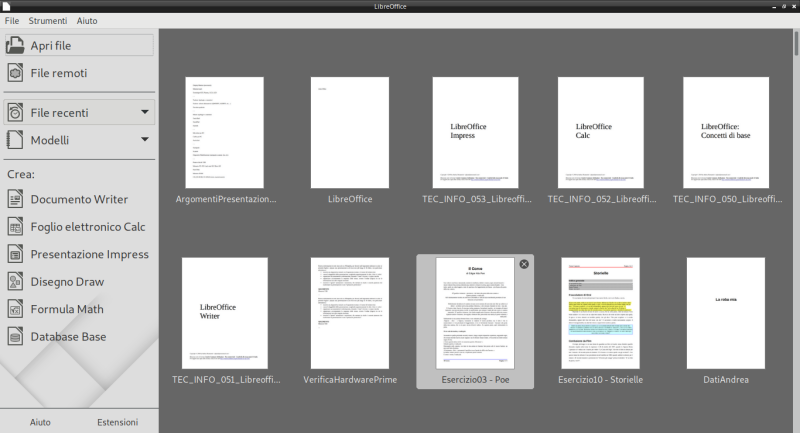

LibreOffice
LibreOffice è una suite di programmi per l'ufficio: contiene un editor di documenti, un foglio elettronico, un programma per le presentazioni multimediali, un database manager, un programma di disegno, uno per le formule matematiche... insomma, più o meno tutto quello che possa servire di fare in un ufficio quando si hanno a che fare con dati e documenti.
Le sue caratteristiche peculiari sono che tutta la suite è un software rilasciato con licenza libera e gratuita e che supporta attualmente tutti i maggiori sistemi operativi desktop: Windows, Mac, Linux.
Nell'ordine dall'alto a sinistra, le icone di:
- LibreOffice Writer, per i documenti
- LibreOffice Calc, per i fogli elettronici
- LibreOffice Impress, per le presentazioni multimediali
- LibreOffice Draw, per il disegno vettoriale
- LibreOffice Base, per i database
- LibreOffice Math, per le formule matematiche
Dalla versione 6, LibreOffice comprende anche una interfaccia iniziale, chiamata semplicemente LibreOffice e che viene identificata dall'icona qui sotto!
Una pagina di storia
La suite Libreoffice appartiene al grande filone delle suite da ufficio
Questa tipologia di software si sviluppa sin dagli anni '80, con i mitici WordStar, Lotus 1-2-3, dBase III, Harvard Graphics; rispettivamente il primo editor di documenti, foglio elettronico, database manager e software per il disegno vettoriale.
Microsoft capisce da subito l'importanza di sviluppare software di questo tipo per i propri sistemi operativi e dapprima incoraggia lo sviluppo della prima suite di programmi da Ufficio, la "Lotus Symphony" per MS-DOS, poi, alla fine degli anni '80, entra in campo direttamente con la celebre suite Microsoft Office, per sistemi Windows: 10 anni dopo Office diventerà la suite per ufficio più utilizzata a livello mondiale e contribuirà enormemente al successo del sistema operativo Windows.
Negli anni 2000 arrivano le prime suite di produttività opensource ad intaccare il monopolio Windows/Office: prima OpenOffice e 10 anni dopo, la neonata suite LibreOffice.
LibreOffice è una suite da ufficio libera e opensource, sviluppata dalla "The Document Foundation" (https://www.documentfoundation.org/), una fondazione no-profit che promuove l'utilizzo di software e formati opensource per la gestione dei dati nei documenti.
La Document Foundation è sostenuta fin dalla sua fondazione da importanti aziende del mondo informatico, quali Novell, Red Hat, Canonical e Google.
Chiudo questa prima pagina con una domanda e una esortazione: perché secondo loro è così importante utilizzare software e soprattutto formati opensource per la gestione dei dati nei documenti? Beh... pensaci! In fin dei conti, è roba tua!
Formato standard aperto
Spiegare quanto è importante che il formato dei dati sia uno standard, ovvero esista un modello di riferimento a cui attenersi per la trattazione dei dati e che questo standard sia aperto, ovvero sia disponibile per sempre per tutti gratuitamente... è veramente difficile.
Per provare a farlo ho pensato a due immagini che si riferiscono a fatti reali.
La prima illustra quello che succede quando ci si dimentica di applicare uno standard:

La seconda illustra quello che può succedere utilizzando standard chiusi:
Insomma... a me sembra molto chiaro...
LibreOffice utilizza il formato standard e aperto definito "Open Document Format", che viene curato dalla OASIS, una organizzazione no-profit (in cui partecipa anche Microsoft) per lo sviluppo di uno standard aperto per i documenti.
L'Open Document Format è stato pubblicato come standard ISO/IEC 26300 -- Open Document Format for Office Applications.
Contiene le seguenti estensioni:
| Tipologia | Estensione | Descrizione |
|---|---|---|
| Testo | ODT | Open Document Text |
| Foglio Elettronico | ODS | Open Document SpreadSheet |
| Presentazione | ODP | Open Document Presentation |
| Disegno | ODG | Open Document Graphics |
| Grafico Business | ODC | Open Document Chart |
| Immagine | ODI | Open Document Image |
| Database | ODB | Open Document (data)Base |
| Formula Matematica | ODF | Open Document Formula |
Scaricare LibreOffice
LibreOffice è una suite per ufficio gratuita, opensource e multipiattaforma.
Il suo sito di riferimento è https://www.libreoffice.org/.
E' disponibile per l'installazione su sistemi Windows, Mac OS, GNU/Linux mentre sono attualmente in lavorazione una versione online del prodotto (gratuitamente installabile su qualunque server web: la propria web suite) e una versione per Android. Non ci sono piani di supporto per iOS vista la natura chiusa dell'ecosistema Apple per le app scaricabili dall'Apple Store.
La pagina di download è https://www.libreoffice.org/download/
Interfaccia comune
Come abbiamo già detto, LibreOffice presenta una interfaccia comune a tutti i suoi software che permette di accedere facilmente ai vari programmi della suite e alla cronologia dei file già editati con qualunque di questi.

Da essa (e da qualunque dei suoi software) è possibile accedere alle impostazioni, che tutti almeno in minima parte dovrebbero personalizzare!
Quello che ci interessa nel nostro caso è la modifica dei DATI UTENTE: così facendo tutti i documenti editati da noi, in quel computer con quell'utente, risulteranno firmati con quei dati utente inseriti lì!
Per accedere alle impostazioni, dovete selezionare il menù STRUMENTI e scegliere la voce OPZIONI: vi troverete davanti una interfaccia come questa.

Nella scheda DATI UTENTE del gruppo LIBREOFFICE inserite i vostri dati: compilate i campi che volete, ma almeno il nome e il cognome dovete inserirli!

Da questo momento qualsiasi documento che create sarà etichettato con i vostri dati!
Per verificare che sia così, in qualsiasi dei programmi LibreOffice, dal menù FILE scegliete la voce PROPRIETA'.